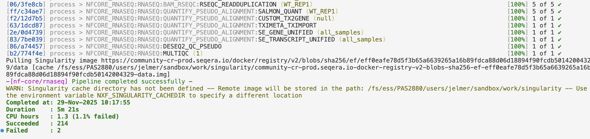
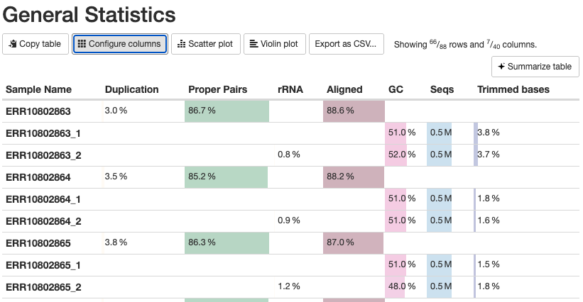
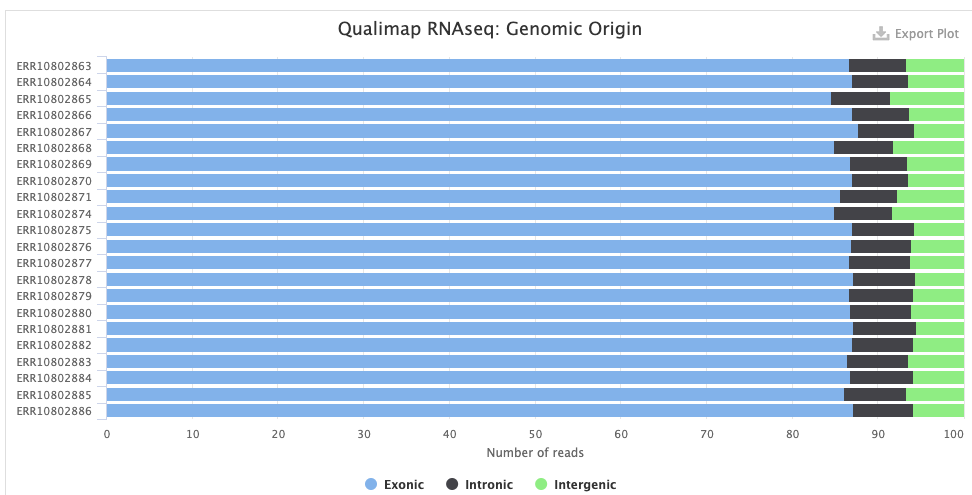
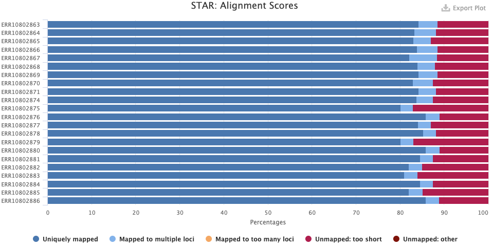
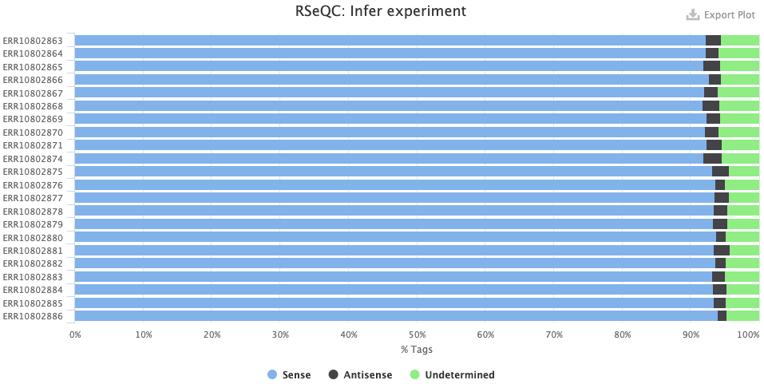
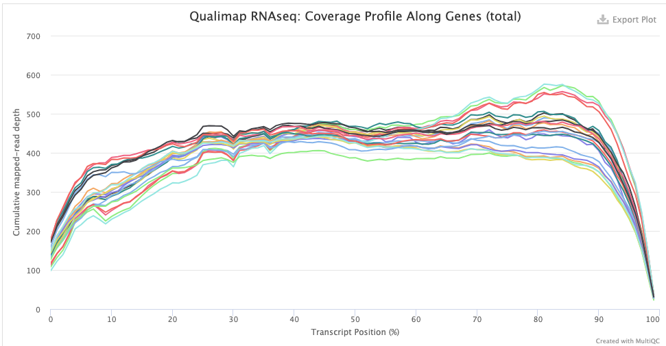
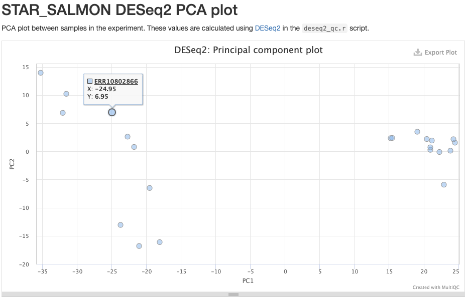

Running an nf-core Nextflow pipeline
Week 15 – Lecture A
![]()
1 Before we get started
Today (and during part of Thursday’s meeting), we will cover how you can run a bioinformatics pipeline written in the Nextflow language and developed as part of the nf-core initiative.
1.1 Learning goals
Specifically, you will learn:
- Why you may want to use pipelines like those made by the nf-core initiative
- What the nf-core rnaseq pipeline does, and when you would want to use it
- How these pipelines can be run with a single command, while they submit jobs to the Slurm scheduler at OSC.
- The difference between general Nextflow options and pipeline-specific options
- How to set up inputs and outputs, including the distinction between a final output dir and a “work dir”
- How to monitor pipeline progress
- How to restart a pipeline run using the
-resumeoption - How to find and interpret the output files produced by the pipeline
1.2 Getting ready
Connect your local VS Code installation to OSC’s Pitzer cluster.
In your VS Code terminal, create and enter a working dir for this week:
mkdir week15 cd week15
2 Introduction
2.1 Why run (nf-core) pipelines?
In week 9, we talked about managing complex bioinformatics workflows, and the advantages that formal Workflow Management Systems like Nextflow (Di Tommaso et al. (2017)) have over DIY pipelines based on e.g. shell scripts. While you can use Nextflow to build your own workflows from scratch, we will here cover how to run an existing, community-developed Nextflow pipeline.
I think this is well worth covering for a few reasons:
- Pipelines are available for many types of omics data analysis, so you may well be able to use one for your own research
- Running such a pipeline is a bit different and more involved than running a typical piece of bioinformatics software. But when you know how to run one nf-core pipeline, it will be relatively straightforward to run others as well.
Recall from week 9 that the “nf-core” initiative (Ewels et al. (2020)) has many pipelines available for various omics data analysis types, with the following most popular pipelines:
{kind=link}
Today, we will learn how to run a Nextflow/nf-core pipeline by running the nf-core rnaseq pipeline on the Garrigós et al. (2025) RNA-Seq data set that we’ve been using throughout the course.
2.2 The nf-core rnaseq pipeline
The nf-core rnaseq pipeline is meant for RNA-Seq datasets like Garrigós et al. (2025)’s, where reads are aligned to a reference genome to produce gene-level counts1.
The inputs of this pipeline are FASTQ files with raw reads, and reference genome files (assembly & annotation), while the outputs include a gene count table and many “QC outputs”. The pipeline will perform all the steps from raw reads to gene counts, but not the gene count analysis itself2. Let’s take a closer look at the steps in the pipeline:

Stage 1: Read QC and pre-processing
- Read QC (FastQC)
- Adapter and quality trimming (TrimGalore)
- Optional removal of rRNA (SortMeRNA) — off by default, but we will include this
Stage 2: Alignment & quantification
- Alignment to the reference genome/transcriptome (STAR)
- Gene expression quantification (Salmon)
Stages 3 and 4: Post-processing, QC, and reporting
- Post-processing alignments: sort, index, mark duplicates (samtools, Picard)
- Alignment/count QC (RSeQC, Qualimap, dupRadar, Preseq, DESeq2)
- Create a QC/metrics report (MultiQC)
This pipeline is quite flexible and you can turn several steps off, add optional steps, and change individual options for most tools that the pipeline runs.
- Optional removal of contaminants (BBSplit)
Map to 1 or more additional genomes whose sequences may be present as contamination, and remove reads that map better to contaminant genomes. - Alternative quantification routes
- Use RSEM instead of Salmon to quantify.
- Skip STAR and perform direct pseudo-alignment & quantification with Salmon.
- Transcript assembly and quantification (StringTie)
While the pipeline is focused on gene-level quantification, it does produce transcript-level counts as well (this is run by default).
2.3 Overview of running an nf-core pipeline
Here are some key aspects of running the nf-core rnaseq pipeline (and other nf-core pipelines) at OSC:
We only need access to an installation of Nextflow. The pipeline runs all its constituent tools (FastQC, STAR, Salmon, etc.) via separate Singularity containers that it will download for us.
We can run the pipeline with a single command (
nextflow run [...]). The resulting Nextflow process will submit Slurm batch jobs for us, trying to parallelize as much as possible, spawning many jobs. The main Nextflow process functions to orchestrate these jobs and will keep running until the pipeline has finished or failed. To tell the pipeline how to submit jobs, we will need a small “config file”.The main Nextflow process does not need much computing power, e.g., a single core with the default 4 GB of RAM will be sufficient. But even though our VS Code shell already runs on a compute node, we are better off also submitting the main process as a batch job, because this process can run for many hours.
Nextflow distinguishes between a final output dir and a “work dir” (
work). All jobs will run and produce outputs in various sub-dirs of the work dir. After each process, only a selection of output files are copied from the work dir to the final output dir3. This distinction is useful at OSC, where a Scratch dir (/fs/scratch) is most suitable as the work dir due to its fast I/O and ample storage space, while a Project dir (/fs/ess/) is most suitable as the final output dir.When you run a pipeline, the relevant
nextflowcommand distinguishes between:Pipeline-specific options to e.g. set inputs and outputs and customize which steps will be run and how (there can be 100+ of these for larger pipelines). By convention, these have a double dash
--, e.g.--input.General Nextflow options to e.g. pass a configuration file for Slurm batch job submissions and determine resuming behavior (see below). These always have a single dash, e.g.
-resume.# In this example, --input is a pipeline-specific option, # while -resume is a general Nextflow option: nextflow run nf-core/rnaseq --input samplesheet.csv -resume
Nextflow pipelines can be restarted flexibly using the
-resumeoption, which will make a pipeline:- Start where it left off if the previous run failed before finishing or timed out.
- Check for changes in input files or pipeline settings, such that it will only rerun what is needed…
- after adding or removing samples
- after changing/replacing one or more input files
- after changing specific settings – e.g., a setting only affecting the very last step will mean that only that step will be rerun
3 Testing and orientation
We’ll use Nextflow via an OSC module, and will start with finding and loading that module. Then, we’ll do a test run of the nf-core rnaseq pipeline.
3.1 Test the Nextflow installation
3.2 Exercise
Find the OSC Nextflow modules with a module command. Then, load the most recent Nextflow module. Finally, check that Nextflow can be run by printing the version with nextflow -v.
Solution (Click to expand)
Find the available module(s):
module avail nextflow-------------------------------------------------------------------------------- nextflow: -------------------------------------------------------------------------------- Versions: nextflow/24.10.4 nextflow/25.04.6 -------------------------------------------------------------------------------- For detailed information about a specific "nextflow" package (including how to load the modules) use the module's full name. Note that names that have a trailing (E) are extensions provided by other modules. For example: $ module spider nextflow/25.04.6 ------------------------------------------------------------------------------So, the most recent version is
nextflow/25.04.6– load it:module load nextflow/25.04.6Check that Nextflow works by printing its version:
nextflow -vnextflow version 25.04.6.5954
3.3 Test-run the rnaseq pipeline
All nf-core pipelines can be test-run with a small test data set that is included with the pipeline. Let’s perform such a test-run to become familiar with the command syntax and the pipeline’s progress log and outputs.
mkdir testrun
cd testrunnextflow run nf-core/rnaseq \
-r 3.22.0 \
-profile test,singularity \
--outdir results/nfc-rnaseqExplanation of the command above:
- The
nextflowcommand has several subcommands, and we use therunsubcommand to run a pipeline - The pipeline to run is the argument to
nextflow run, here:nf-core/rnaseq4 - The
-roption specifies the pipeline version to use (here, version3.22.0, the currently most recent one) - The
-profileoption specifies which “profile(s)” to use:testtells the pipeline to use its built-in test data setsingularitytells the pipeline to run software via Singularity containers
- The
--outdiroption specifies the final output dir for the pipeline.
In the above command, which are general Nextflow vs. pipeline-specific options? (Click for the answer)
Recall that general Nextflow options have a single dash (-), while pipeline-specific options have a double dash (--). As such, --outdir is the only pipeline-specific option in this command; all others are general Nextflow options.
3.4 The test-run’s progress log
If you haven’t done so already, execute the above nextflow run command to start the test run. Since you are running this directly in the terminal, logging output (standard out and standard error) will be printed to the screen. Here is the first bit of expected output (as you can see, all the inputs from the test dataset will be downloaded from GitHub):
Nextflow 25.10.2 is available - Please consider updating your version to it
N E X T F L O W ~ version 25.04.6
Launching `https://github.com/nf-core/rnaseq` [exotic_lavoisier] DSL2 - revision: c522f87e14 [3.22.0]
------------------------------------------------------
,--./,-.
___ __ __ __ ___ /,-._.--~'
|\ | |__ __ / ` / \ |__) |__ } {
| \| | \__, \__/ | \ |___ \`-._,-`-,
`._,._,'
nf-core/rnaseq 3.22.0
------------------------------------------------------
Input/output options
input : https://raw.githubusercontent.com/nf-core/test-datasets/626c8fab639062eade4b10747e919341cbf9b41a/samplesheet/v3.10/samplesheet_test.csv
outdir : results/nfc-rnaseq
Reference genome options
fasta : https://raw.githubusercontent.com/nf-core/test-datasets/626c8fab639062eade4b10747e919341cbf9b41a/reference/genome.fasta
gtf : https://raw.githubusercontent.com/nf-core/test-datasets/626c8fab639062eade4b10747e919341cbf9b41a/reference/genes_with_empty_tid.gtf.gz
gff : https://raw.githubusercontent.com/nf-core/test-datasets/626c8fab639062eade4b10747e919341cbf9b41a/reference/genes.gff.gz
transcript_fasta : https://raw.githubusercontent.com/nf-core/test-datasets/626c8fab639062eade4b10747e919341cbf9b41a/reference/transcriptome.fasta
additional_fasta : https://raw.githubusercontent.com/nf-core/test-datasets/626c8fab639062eade4b10747e919341cbf9b41a/reference/gfp.fa.gz
hisat2_index : https://raw.githubusercontent.com/nf-core/test-datasets/626c8fab639062eade4b10747e919341cbf9b41a/reference/hisat2.tar.gz
salmon_index : https://raw.githubusercontent.com/nf-core/test-datasets/626c8fab639062eade4b10747e919341cbf9b41a/reference/salmon.tar.gzBelow is some of the output regarding the processes that the pipeline spawns, where:
The
executor > localline indicates that the pipeline is running jobs “locally”, i.e. on the same node as the main Nextflow process. (For the test run, this is just about fine, but when we run the pipeline on our real data, we will want to have these submitted as Slurm batch jobs instead.)Each
process >line indicates a specific process (step in the pipeline) that is being run.- For some of these, it says
5 of 5way on the right, which indicates that for this process, multiple jobs are being run in parallel (typically one per sample, and this is true for the majority of processes) - Other processes have
1 of 1, indicating that only a single job is run (e.g., for preparing the reference genome) - In my example output below, one line says
retries: 2, indicating that this job failed twice but was retried and eventually succeeded - The hexadecimal string at the start of each line (e.g.,
[d2/97278b]) is a unique identifier for (one of) that process’ jobs. We’ll get back to this later, as that string also identifies the location where this job is run and its input and output files are stored within theworkdir5.
- For some of these, it says
[d2/97278b] process > NFCORE_RNASEQ:RNASEQ:FASTQ_QC_TRIM_FILTER_SETSTRANDEDNESS:FQ_LINT_AFTER_TRIMMING (WT_REP1) [100%] 5 of 5 ✔
[9a/ce2657] process > NFCORE_RNASEQ:RNASEQ:FASTQ_QC_TRIM_FILTER_SETSTRANDEDNESS:BBMAP_BBSPLIT (WT_REP1) [100%] 5 of 5, retries: 2 ✔
[40/ca9917] process > NFCORE_RNASEQ:RNASEQ:FASTQ_QC_TRIM_FILTER_SETSTRANDEDNESS:FQ_LINT_AFTER_BBSPLIT (WT_REP1) [100%] 5 of 5 ✔
[5d/75070a] process > NFCORE_RNASEQ:RNASEQ:FASTQ_QC_TRIM_FILTER_SETSTRANDEDNESS:FASTQ_SUBSAMPLE_FQ_SALMON:FQ_SUBSAMPLE (WT_REP1) [100%] 1 of 1 ✔
[e2/e27cbb] process > NFCORE_RNASEQ:RNASEQ:FASTQ_QC_TRIM_FILTER_SETSTRANDEDNESS:FASTQ_SUBSAMPLE_FQ_SALMON:SALMON_QUANT (WT_REP1) [100%] 1 of 1 ✔
[72/cb3999] process > NFCORE_RNASEQ:RNASEQ:ALIGN_STAR:STAR_ALIGN (WT_REP1) [100%] 5 of 5 ✔
[a4/e4a18e] process > NFCORE_RNASEQ:RNASEQ:ALIGN_STAR:BAM_SORT_STATS_SAMTOOLS:SAMTOOLS_SORT (WT_REP1) [100%] 5 of 5 ✔
[66/ec2aab] process > NFCORE_RNASEQ:RNASEQ:ALIGN_STAR:BAM_SORT_STATS_SAMTOOLS:SAMTOOLS_INDEX (WT_REP1) [100%] 5 of 5 ✔
executor > local (216)
[6c/714522] process > NFCORE_RNASEQ:PREPARE_GENOME:GUNZIP_GTF (genes_with_empty_tid.gtf.gz) [100%] 1 of 1 ✔
[07/5a941c] process > NFCORE_RNASEQ:PREPARE_GENOME:GTF_FILTER (genome.fasta) [100%] 1 of 1 ✔Here is some output related to the downloading of Singularity containers (by default these are downloaded to a singularity subdir of the work dir):
Pulling Singularity image https://community-cr-prod.seqera.io/docker/registry/v2/blobs/sha256/52/52ccce28d2ab928ab862e25aae26314d69c8e38bd41ca9431c67ef05221348aa/data [cache /fs/ess/PAS2880/users/jelmer/week15/testrun/work/singularity/community-cr-prod.seqera.io-docker-registry-v2-blobs-sha256-52-52ccce28d2ab928ab862e25aae26314d69c8e38bd41ca9431c67ef05221348aa-data.img]
Pulling Singularity image https://depot.galaxyproject.org/singularity/fq:0.12.0--h9ee0642_0 [cache /fs/ess/PAS2880/users/jelmer/week15/testrun/work/singularity/depot.galaxyproject.org-singularity-fq-0.12.0--h9ee0642_0.img]
Pulling Singularity image https://community-cr-prod.seqera.io/docker/registry/v2/blobs/sha256/9b/9becad054093ad4083a961d12733f2a742e11728fe9aa815d678b882b3ede520/data [cache /fs/ess/PAS2880/users/jelmer/week15/testrun/work/singularity/community-cr-prod.seqera.io-docker-registry-v2-blobs-sha256-9b-9becad054093ad4083a961d12733f2a742e11728fe9aa815d678b882b3ede520-data.img]
Pulling Singularity image https://depot.galaxyproject.org/singularity/fastqc:0.12.1--hdfd78af_0 [cache /fs/ess/PAS2880/users/jelmer/week15/testrun/work/singularity/depot.galaxyproject.org-singularity-fastqc-0.12.1--hdfd78af_0.img]
Pulling Singularity image https://depot.galaxyproject.org/singularity/python:3.9--1 [cache /fs/ess/PAS2880/users/jelmer/week15/testrun/work/singularity/depot.galaxyproject.org-singularity-python-3.9--1.img]After some time, the pipeline should finish, hopefully successfully:
[fb/68d030] process > NFCORE_RNASEQ:RNASEQ:MULTIQC (1) [100%] 1 of 1 ✔
-[nf-core/rnaseq] Pipeline completed successfully -
Completed at: 29-Nov-2025 10:06:48
Duration : 5m 23s
CPU hours : 1.3
Succeeded : 214The output that you should see printed to your terminal should have colors that are not displayed above – for example:

3.5 Test-run output files
The final output files are in the dir we specified – as you can see, there are several sub-dirs with outputs from various steps, and these dirs are named after the tools that produced them:
ls results/nfc-rnaseqbbsplit custom fastqc fq_lint multiqc pipeline_info salmon star_salmon trimgaloreWe’ll explore those outputs more for the run on the Garrigós et al. (2025) data. The work dir is in this case in its default location, which is you current working dir (i.e, the dir from which you execute the nextflow command) – let’s list its contents:
ls work02 07 14 1e 23 2f 3b 47 51 5a 65 6e 78 81 8b 93 9e a5 aa b0 b7 c0 cf d8 e6 ec f7 singularity
03 08 15 1f 24 33 40 4b 52 5b 66 70 7a 82 8c 94 9f a6 ab b1 ba c1 collect-file d9 e8 ed f8 stage-450f1767-7222-43e1-96cd-7d7b2a8a187c
04 0c 17 20 25 37 42 4c 55 5c 69 71 7b 83 8d 95 a1 a7 ad b2 bc c3 d2 db e9 f1 fa tmp
05 0f 1a 21 2c 38 43 4e 56 5d 6a 72 7c 86 90 9a a3 a8 ae b3 bd c6 d3 e2 ea f2 fb
06 11 1d 22 2e 3a 45 4f 59 63 6c 73 80 87 91 9d a4 a9 af b4 bf ce d7 e3 eb f3 ffAs mentioned above, the hexadecimals between square brackets (e.g. [62/4f8c0d]) that are printed before each job point to the sub-directory within this work-dir that it ran in (every individual job runs in its own dir). This can be handy for troubleshooting, or even just to take a closer look at what exactly the pipeline is running.
Say we want to look at the files for the last process, MultiQC, which had the following printed in the log:
[fb/68d030] process > NFCORE_RNASEQ:RNASEQ:MULTIQC (1) [100%] 1 of 1 ✔We can check the files in that dir as follows – we’ll use the -a option to ls so hidden files are also listed, some of which are of interest:
# (The full name of the `68d030` dir is much longer,
# but the first characters uniquely identify it, so you can tab-complete it)
ls -a work/fb/68d030ebc1e94a4f0c8efa189b6bc30. .command.err .exitcode versions.yml
.. .command.log multiqc_config.yml
1 .command.out multiqc_report_data
10 .command.run multiqc_report.html
100 .command.sh multiqc_report_plots
101 .command.begin .command.trace name_replacement.txt
# [...Not all files shown...]The files in this work subdir include:
- Input files (as links/shortcuts, so the files don’t have to be copied in full)
- Output files, such as
multiqc_report.html - Several hidden files starting with a dot (
.), including:.command.sh: the exact command that was run by this process.command.log: logging information from the process run
To see exactly how MultiQC was run by the pipeline, show the contents of the .command.sh file – for now, the details of this command aren’t important, but it’s good to know where to find it when you need to troubleshoot or for another reason would like to know exactly how a program was run.
cat work/fb/68d030ebc1e94a4f0c8efa189b6bc30/.command.sh #!/usr/bin/env bash -C -e -u -o pipefail
multiqc \
--force \
\
--config multiqc_config.yml \
--filename multiqc_report.html \
\
\
--replace-names name_replacement.txt \
\
.
cat <<-END_VERSIONS > versions.yml
"NFCORE_RNASEQ:RNASEQ:MULTIQC":
multiqc: $( multiqc --version | sed -e "s/multiqc, version //g" )
END_VERSIONS3.6 Re-running the pipeline with -resume
Let’s quickly explore how the -resume option works. We can re-run the same command as above, but now adding -resume:
nextflow run nf-core/rnaseq \
-r 3.22.0 \
-profile test,singularity \
--outdir results/nfc-rnaseq \
-resumeThis pipeline run should complete very quickly, because all steps were already completed successfully in the previous run – the process logging should look like this, where cached: 1 ✔ indicates that the outputs were already present from before, and the job wasn’t actually rerun:
[6c/714522] NFCORE_RNASEQ:PREPARE_GENOME:GUNZIP_GTF (genes_with_empty_tid.gtf.gz) [100%] 1 of 1, cached: 1 ✔
[6c/714522] NFCORE_RNASEQ:PREPARE_GENOME:GUNZIP_GTF (genes_with_empty_tid.gtf.gz) [100%] 1 of 1, cached: 1 ✔
[07/5a941c] NFCORE_RNASEQ:PREPARE_GENOME:GTF_FILTER (genome.fasta) [100%] 1 of 1, cached: 1 ✔
[f7/32ee05] NFCORE_RNASEQ:PREPARE_GENOME:GUNZIP_ADDITIONAL_FASTA (gfp.fa.gz) [100%] 1 of 1, cached: 1 ✔
[80/4b8821] NFCORE_RNASEQ:PREPARE_GENOME:CUSTOM_CATADDITIONALFASTA (null) [100%] 1 of 1, cached: 1 ✔
[59/1f5b09] NFCORE_RNASEQ:PREPARE_GENOME:GTF2BED (genome_gfp.gtf) [100%] 1 of 1, cached: 1 ✔
[66/33bfeb] NFCORE_RNASEQ:PREPARE_GENOME:CUSTOM_GETCHROMSIZES (genome_gfp.fasta) [100%] 1 of 1, cached: 1 ✔
[40/af63a5] NFCORE_RNASEQ:PREPARE_GENOME:BBMAP_BBSPLIT (null) [100%] 1 of 1, cached: 1 ✔-[nf-core/rnaseq] Pipeline completed successfully -
Completed at: 29-Nov-2025 10:58:12
Duration : 1m 11s
CPU hours : 1.3 (99.2% cached)
Succeeded : 1
Cached : 213If some processes had failed in the previous run, only those processes (and any downstream processes that depend on them) would be rerun now. If we’d changed an input file, only the processes affected by that change (and their downstream processes) would be rerun.
4 Preparation for the run
For the pipeline run with the Garrigós et al. (2025) data, we need to start with some prep:
- Create a “sample sheet” to tell the pipeline about our input FASTQ files
- Create a small “config file” so Nextflow knows how to submit Slurm batch jobs at OSC.
First, we will move out of the testrun dir, make some dirs we’ll need, and create a README file:
# Go back to /fs/ess/PAS2880/users/$USER/week15
cd ..
# Create several dirs
mkdir scripts software metadata
# Create a README file (then open it):
touch README.md4.1 Create a sample sheet
This pipeline requires a “sample sheet” as one of its inputs. In the sample sheet, you should provide the paths to your FASTQ files and specity the so-called “strandedness” of your RNA-Seq library.
During RNA-Seq library prep, information about the directionality of the original RNA transcripts can be retained (resulting in a “stranded” library) or lost (resulting in an “unstranded” library: specify unstranded in the sample sheet).
In turn, stranded libraries can prepared either in reverse-stranded (reverse, by far the most common) or forward-stranded (forward) fashion. For more information about library strandedness, see this page.
The pipeline also allows for a fourth option: auto, in which case the strandedness is automatically determined at the start of the pipeline by pseudo-mapping a small proportion of the data with Salmon.
The sample sheet should be a plain-text comma-separated values (CSV) file. Here is the example file from the pipeline’s documentation:
sample,fastq_1,fastq_2,strandedness
CONTROL_REP1,AEG588A1_S1_L002_R1_001.fastq.gz,AEG588A1_S1_L002_R2_001.fastq.gz,auto
CONTROL_REP1,AEG588A1_S1_L003_R1_001.fastq.gz,AEG588A1_S1_L003_R2_001.fastq.gz,auto
CONTROL_REP1,AEG588A1_S1_L004_R1_001.fastq.gz,AEG588A1_S1_L004_R2_001.fastq.gz,autoSo, we need a header row with column names, and then one row per sample. The file should have the following columns:
sample: Sample ID (we will simply use the part of the file name shared by R1 and R2)fastq_1: R1 FASTQ file path (including the dir, unless these files are in your working dir)fastq_2: R2 FASTQ file path (idem)strandedness: The library’s strandedness,unstranded,reverse,forward, orauto. This data is forward-stranded, so we’ll useforward6.
We will create this file with a helper script that comes with the pipeline, and tell the script about the strandedness of the reads, the R1 and R2 FASTQ file suffices, the input FASTQ dir (data/fastq), and the output file ($samplesheet):
# [Paste this into README.md and then run it in the terminal]
# Download the pipeline's helper script
URL=https://raw.githubusercontent.com/nf-core/rnaseq/refs/tags/3.22.0/bin/fastq_dir_to_samplesheet.py
wget -P software "$URL"
# Create the sample sheet for the nf-core pipeline
python3 software/fastq_dir_to_samplesheet.py \
--strandedness forward \
--read1_extension "_R1.fastq.gz" \
--read2_extension "_R2.fastq.gz" \
../garrigos-data/fastq \
metadata/nfc-samplesheet.csvCheck the contents of your newly created sample sheet file:
# [Run this directly in the terminal]
head -n 5 metadata/nfc-samplesheet.csvsample,fastq_1,fastq_2,strandedness
ERR10802863,../garrigos-data/fastq/ERR10802863_R1.fastq.gz,../garrigos-data/fastq/ERR10802863_R2.fastq.gz,forward
ERR10802864,../garrigos-data/fastq/ERR10802864_R1.fastq.gz,../garrigos-data/fastq/ERR10802864_R2.fastq.gz,forward
ERR10802865,../garrigos-data/fastq/ERR10802865_R1.fastq.gz,../garrigos-data/fastq/ERR10802865_R2.fastq.gz,forward
ERR10802866,../garrigos-data/fastq/ERR10802866_R1.fastq.gz,../garrigos-data/fastq/ERR10802866_R2.fastq.gz,forwardMany nf-core pipelines require similar sample sheets, and there isn’t always a helper script available. While you could also fairly easily create such a file manually in a text editor, that would be tedious and error-prone for many samples.
Therefore, it may also be useful to know how to create such a file with shell commands. While this goes some way beyond the shell commands we have previously covered in this course, here is one way to do that:
# A) Define the file name and create the header line
echo "sample,fastq_1,fastq_2,strandedness" > metadata/nfc-samplesheet.csv
# B) Add a row for each sample based on the file names
ls ../garrigos-data/fastq/*fastq.gz |
paste -d, - - |
sed -E 's/$/,forward/' |
sed -E 's@.*/(.*)_R1@\1,&@' >> metadata/nfc-samplesheet.csvHere is an explanation of the last command:
The
lscommand will spit out a list of all FASTQ files that includes the dir name.paste - -will paste that FASTQ files side-by-side in two columns — because there are 2 FASTQ files per sample, and they are automatically correctly ordered due to their file names, this will create one row per sample with the R1 and R2 FASTQ files next to each other. The-d,option topastewill use a comma instead of a Tab to delimit columns.The first
sedcommand's/$/,forward/'will simply add,forwardat the end ($) of each line to indicate the strandedness.The second
sedcommand,'s@.*/(.*)_R1@\1,&@':- Adds the sample ID column by copying that part from the R1 FASTQ file name
- Requires
Ebecause it uses “extended” regular expressions - This uses
s@<search>@replace@with@instead of/, because there is a/in our search pattern - In the search pattern (
.*/(.*)_R1), the sample ID is captured with(.*) - In the replace section (
\1,&), the captured sample ID is “recalled” with\1, then a comma is added, and finally the full matched search pattern (i.e., the path to the R1 file) with&.
The output is appended (
>>) to the samplesheet because we need to keep the header line that was already in it.
4.2 Create a configuration file
One of the strengths of Nextflow/nf-core pipelines is that they can be run on a wide variety of compute infrastructures, from a laptop to HPC clusters and cloud computing. Our test-run used the simplest scenario, running everything “locally” on a single node. However, for our real data run, we want to have the pipeline submit Slurm batch jobs so it will effciently run in parallel across multiple nodes.
To tell the pipeline to submit Slurm batch jobs for us, we have to use a configuration (config) file. There are multiple ways of storing this file and telling Nextflow about it, but we’ll simply create a file nextflow.config in the dir from which we submit the nextflow run command: Nextflow will automatically detect and process such a file.
Create the config file:
touch nextflow.configSince the pipeline has many good default settings for (Slurm) batch jobs, we can keep this config file very simple, specifying only our “executor” program (Slurm) and the OSC project to be used for Slurm job submissions. Open the newly created
nextflow.configfile in the VS Code editor and paste the following into it:process.executor='slurm' process.clusterOptions='--account=PAS2880'
5 Write a shell script to run the pipeline
As mentioned above, for this larger pipeline run, we will also submit the nextflow run command itself as a Slurm batch job via a shell script. (So, there are two “layers” of batch jobs: the main pipeline process for which we submit a batch job ourself, and the individual jobs that Nextflow spawns.) Let’s go through the key parts of this shell script.
5.1 Processing arguments passed to the script
As we’ve often done with shell scripts to run bioinformatics tools, we’ll keep the shell script flexible by having it accepts arguments that represent the inputs and outputs of the pipeline:
- Input 1: The sample sheet
- Input 2: The FASTA reference genome assembly file
- Input 3: The GTF reference genome annotation file
- Output 1: The desired output dir for the final pipeline output
- Output 2: The desired Nextflow “workdir” for the initial pipeline output
# [Partial shell script code, don't copy or run]
# Process command-line arguments
samplesheet=$1
fasta=$2
gtf=$3
outdir=$4
workdir=$5When building the command below, we’ll use these variables to refer to the input/output paths.
5.2 Writing the nextflow run command
Here is the part of the command that includes general Nextflow options:
# [Partial shell script code, don't copy or run]
nextflow run nf-core/rnaseq \
-r 3.22.0 \
-profile singularity \
-resume \
-ansi-log false \
-work-dir "$workdir" \- Like in the test run above, our command starts with
nextflow runfollowed by the pipeline name and version - The
-profilewill now simply besingularity(i.e. omittingtest) - It’s a good idea to by default use the
-resumeoption, even if this option won’t make any difference when we run the pipeline for the first time7 - We set the
-work-dirto a dir within our project’s scratch space - The
-ansi-log falseoption changes the logging format from what we saw in the test-run to a more basic format that works much better with Slurm log files8.
Next, we’ll add the pipeline-specific options, starting with several required options (see the pipeline’s documentation), which represent the inputs and outputs discussed above – the paths to:
--input: the “sample sheet”--fasta: the reference genome assembly FASTA file--gtf: the reference genome annotation GTF file--outdir: the output dir
This pipeline has different options for e.g. alignment and quantification. We will stick close to the defaults, which includes read alignment with STAR and gene-level quantification with Salmon, with one exception: we want to remove reads that originate from ribosomal RNA (this removal step is skipped by default).
Exercise: Find the option to remove rRNA
Take a look at the “Parameters” tab on the pipeline’s documentation website:
- Browse through the options for a bit to get a feel for the extent to which you can customize the pipeline.
- Try to find the option to turn on removal of rRNA with SortMeRNA.
Click for the solution
The option you want is --remove_ribo_rna.
The final command
With all above-mentioned options, the final nextflow run command is:
# [Partial shell script code, don't copy or run]
nextflow run nf-core/rnaseq \
-r 3.22.0 \
-profile singularity \
-resume \
-ansi-log false \
-work-dir "$workdir" \
--input "$samplesheet" \
--fasta "$fasta" \
--gtf "$gtf" \
--outdir "$outdir" \
--remove_ribo_rna5.3 The final script
Now, we’re read to create the full shell script.
touch scripts/nfc-rnaseq.sh
# Then open the newly created script in the VS Code editorPaste the following code into the script – this contains the discussed command and variables, as well as:
- The “standard shell” script header lines we’ve been using
#SBATCHoptions: note that these are only for the “main” Nextflow process, not for the jobs that Nextflow itself will submit! Therefore, we’ll ask for quite a bit of time while we only need the default 1 core and 4 GB RAM. It’s possible to change the resource requests for the Nextflow-submitted jobs vianextflow.configfile if needed, but we won’t do that here. We ask for 12 hours mostly because the resource requests are rather large by default, such that jobs may be queued for substantial amounts of time (without queueing time, the pipeline would finish in well under an hour).- Some
echoreporting of arguments/variables, printing the date, etc.
#!/bin/bash
#SBATCH --account=PAS2880
#SBATCH --time=12:00:00
#SBATCH --mail-type=END,FAIL
#SBATCH --output=slurm-nfc-rnaseq-%j.out
set -euo pipefail
# Load the Nextflow Conda environment
module load nextflow/25.04.6
# Copy command-line arguments
samplesheet=$1
fasta=$2
gtf=$3
outdir=$4
workdir=$5
# Report
echo "Starting script nfc-rnaseq.sh"
date
echo "Samplesheet: $samplesheet"
echo "Reference FASTA: $fasta"
echo "Reference GTF: $gtf"
echo "Output dir: $outdir"
echo "Nextflow work dir: $workdir"
echo
# Create the output dirs
mkdir -p "$outdir" "$workdir"
# Run the workflow
nextflow run nf-core/rnaseq \
-r 3.22.0 \
-profile singularity \
-resume \
-work-dir "$workdir" \
-ansi-log false \
--input "$samplesheet" \
--fasta "$fasta" \
--gtf "$gtf" \
--outdir "$outdir" \
--remove_ribo_rna
# Report
echo
echo "Successfully finished script nfc-rnaseq.sh"
dateBy default, Nextflow will download Singularity containers to a singularity subdir within the specified Nextflow work dir. However, these containers can take up quite some space (several GBs), and when running multiple pipelines, you might want to share a single dir for all Singularity containers.
To specify a dir for Nextflow to store containers, set the environment variable NXF_SINGULARITY_CACHEDIR9. For example:
# Create an environment variable for the container dir
export NXF_SINGULARITY_CACHEDIR=/fs/scratch/PAS2880/containers6 Run the pipeline
Now that the shell script is ready, you can run the pipeline on the Garrigós et al. (2025) data! You will add the code to do so the README.md file we created above.
6.1 Define variables to pass the the shell script
First, define variables with the arguments needed to run the script:
# [Paste this into README.md and then run it in the terminal]
# Defining the pipeline outputs
outdir=results/nfc-rnaseq
workdir=/fs/scratch/PAS2880/$USER/week15/nfc-rnaseq-work
# Defining the pipeline inputs
samplesheet=metadata/nfc-samplesheet.csv
fasta=../garrigos-data/ref/GCF_016801865.2_TS_CPP_V2_genomic.fna
gtf=../garrigos-data/ref/GCF_016801865.2.gtfRun the above lines in your terminal, then check that the input files are present at the specified paths:
ls -lh "$samplesheet" "$fasta" "$gtf"-rw-rw----+ 1 jelmer PAS0471 123M Oct 23 12:27 ../garrigos-data/ref/GCF_016801865.2.gtf
-rw-rw----+ 1 jelmer PAS0471 547M Dec 22 2022 ../garrigos-data/ref/GCF_016801865.2_TS_CPP_V2_genomic.fna
-rw-rw----+ 1 jelmer PAS0471 2.5K Nov 30 08:39 metadata/nfc-samplesheet.csv6.2 Submit your shell script
Make sure you’ve run the above lines to define the variables, and then submit the shell script as a Slurm batch job:
# [Paste this into README.md and then run it in the terminal]
# Submit the script to run the pipeline as a batch job
sbatch scripts/nfc-rnaseq.sh "$samplesheet" "$fasta" "$gtf" "$outdir" "$workdir"Submitted batch job 421757086.3 Check the pipeline’s progress
Let’s check whether your job has started running, and if so, whether Nextflow has already spawned jobs:
# [Run this directly in the terminal]
squeue -u $USER -lSun Nov 30 08:45:15 2025
JOBID PARTITION NAME USER STATE TIME TIME_LIMI NODES NODELIST(REASON)
42175708 cpu nfc-rnas jelmer RUNNING 0:23 12:00:00 1 p0222In the example output above, the only running job is the one we directly submitted, i.e. the main Nextflow process.
If you try squeue again later, you should see Nextflow-submitted jobs – below, all the jobs with (partial) name nf-NFCOR are jobs submitted by Nextflow:
squeue -u $USER -lSun Nov 30 08:46:39 2025
JOBID PARTITION NAME USER STATE TIME TIME_LIMI NODES NODELIST(REASON)
42175726 cpu nf-NFCOR jelmer RUNNING 0:01 4:00:00 1 p0095
42175727 cpu nf-NFCOR jelmer RUNNING 0:01 4:00:00 1 p0080
42175728 cpu nf-NFCOR jelmer RUNNING 0:01 4:00:00 1 p0080
42175729 cpu nf-NFCOR jelmer RUNNING 0:01 4:00:00 1 p0078
42175730 cpu nf-NFCOR jelmer RUNNING 0:01 4:00:00 1 p0078
42175731 cpu nf-NFCOR jelmer RUNNING 0:01 4:00:00 1 p0078
42175732 cpu nf-NFCOR jelmer RUNNING 0:01 4:00:00 1 p0078
42175711 cpu nf-NFCOR jelmer RUNNING 0:01 4:00:00 1 p0098
42175712 cpu nf-NFCOR jelmer RUNNING 0:01 4:00:00 1 p0099
42175708 cpu nfc-rnas jelmer RUNNING 1:26 12:00:00 1 p0222Unfortunately, the columns in the output above are quite narrow, so it’s not possible to see which step of the pipeline is being run by that job. The following (awful-looking!) code can be used to make that column much wider, so you can see the jobs’ full names which makes clear which steps are being run:
# (The '%.100j' makes the NAME colum 100 characters wide)
squeue -u $USER --format="%.9i %.9P %.100j %.8T %.10M %.10l %.4C %R %.16V" JOBID PARTITION NAME STATE TIME TIME_LIMIT CPUS NODELIST(REASON) SUBMIT_TIME
42175824 cpu nf-NFCORE_RNASEQ_RNASEQ_FASTQ_QC_TRIM_FILTER_SETSTRANDEDNESS_SORTMERNA_(ERR10802879) RUNNING 0:53 16:00:00 17 p0111 2025-11-30T08:49
42175825 cpu nf-NFCORE_RNASEQ_RNASEQ_FASTQ_QC_TRIM_FILTER_SETSTRANDEDNESS_SORTMERNA_(ERR10802880) RUNNING 0:53 16:00:00 17 p0116 2025-11-30T08:49
42175826 cpu nf-NFCORE_RNASEQ_RNASEQ_FASTQ_QC_TRIM_FILTER_SETSTRANDEDNESS_SORTMERNA_(ERR10802883) RUNNING 0:53 16:00:00 17 p0121 2025-11-30T08:49
42175827 cpu nf-NFCORE_RNASEQ_RNASEQ_FASTQ_QC_TRIM_FILTER_SETSTRANDEDNESS_SORTMERNA_(ERR10802885) RUNNING 0:53 16:00:00 17 p0122 2025-11-30T08:49
42175780 cpu nf-NFCORE_RNASEQ_PREPARE_GENOME_STAR_GENOMEGENERATE_(GCF_016801865.2_TS_CPP_V2_genomic.fna) RUNNING 3:19 16:00:00 17 p0116 2025-11-30T08:46
42175708 cpu nfc-rnaseq.sh RUNNING 5:19 12:00:00 1 p0222 2025-11-30T08:44You can also keep an eye on the pipeline’s progress, and see if there are any errors, by checking the Slurm log file – the top of the file should look like this:
# (We need the -R option to 'less' to display colors properly)
less -R slurm-nfc_rnaseq*Starting script nfc-rnaseq.sh
Sun Nov 30 08:45:14 AM EST 2025
Samplesheet: metadata/nfc-samplesheet.csv
Reference FASTA: ../garrigos-data/ref/GCF_016801865.2_TS_CPP_V2_genomic.fna
Reference GTF: ../garrigos-data/ref/GCF_016801865.2.gtf
Output dir: results/nfc-rnaseq
Nextflow work dir: /fs/scratch/PAS2880/jelmer/week15/nfc-rnaseq-work
Nextflow 25.10.2 is available - Please consider updating your version to it
N E X T F L O W ~ version 25.04.6
WARN: It appears you have never run this project before -- Option `-resume` is ignored
Launching `https://github.com/nf-core/rnaseq` [festering_ritchie] DSL2 - revision: c522f87e14 [3.22.0]
------------------------------------------------------
,--./,-.
___ __ __ __ ___ /,-._.--~'
|\ | |__ __ / ` / \ |__) |__ } {
| \| | \__, \__/ | \ |___ \`-._,-`-,
`._,._,'
nf-core/rnaseq 3.22.0
------------------------------------------------------
Input/output options
input : metadata/nfc-samplesheet.csv
outdir : results/nfc-rnaseq
Reference genome options
fasta : ../garrigos-data/ref/GCF_016801865.2_TS_CPP_V2_genomic.fna
gtf : ../garrigos-data/ref/GCF_016801865.2.gtf
Read filtering options
remove_ribo_rna : trueIn the Slurm log file, pipeline progress is shown in the following way – unfortunately, with -ansi-log false, you can only see when jobs are being submitted, not when they finish10.
[62/846bb5] Submitted process > NFCORE_RNASEQ:RNASEQ:FASTQ_QC_TRIM_FILTER_SETSTRANDEDNESS:FQ_LINT (ERR10802863)
[a1/e6ec8f] Submitted process > NFCORE_RNASEQ:RNASEQ:FASTQ_QC_TRIM_FILTER_SETSTRANDEDNESS:FQ_LINT (ERR10802864)
[09/0a2331] Submitted process > NFCORE_RNASEQ:PREPARE_GENOME:GTF_FILTER (GCF_016801865.2_TS_CPP_V2_genomic.fna)
[bf/a96cb8] Submitted process > NFCORE_RNASEQ:PREPARE_GENOME:CUSTOM_GETCHROMSIZES (GCF_016801865.2_TS_CPP_V2_genomic.fna)
[23/92e452] Submitted process > NFCORE_RNASEQ:RNASEQ:FASTQ_QC_TRIM_FILTER_SETSTRANDEDNESS:FQ_LINT (ERR10802865)
[ca/1cbfe9] Submitted process > NFCORE_RNASEQ:RNASEQ:FASTQ_QC_TRIM_FILTER_SETSTRANDEDNESS:FQ_LINT (ERR10802866)
[34/054d8c] Submitted process > NFCORE_RNASEQ:RNASEQ:FASTQ_QC_TRIM_FILTER_SETSTRANDEDNESS:FQ_LINT (ERR10802867)
[32/08014c] Submitted process > NFCORE_RNASEQ:RNASEQ:FASTQ_QC_TRIM_FILTER_SETSTRANDEDNESS:FQ_LINT (ERR10802868)
[4e/fe7605] Submitted process > NFCORE_RNASEQ:RNASEQ:FASTQ_QC_TRIM_FILTER_SETSTRANDEDNESS:FQ_LINT (ERR10802870)
[46/448512] Submitted process > NFCORE_RNASEQ:RNASEQ:FASTQ_QC_TRIM_FILTER_SETSTRANDEDNESS:FQ_LINT (ERR10802871)Both of these warnings can be ignored:
“Biotype QC” is not important and this information is indeed simply missing from our GTF file; there is nothing we can do about that.
WARN: ~~~~~~~~~~~~~~~~~~~~~~~~~~~~~~~~~~~~~~~~~~~~~~~~~~~~~~~~~~~~~~~~~~~~~~ Biotype attribute 'gene_biotype' not found in the last column of the GTF file! Biotype QC will be skipped to circumvent the issue below: https://github.com/nf-core/rnaseq/issues/460 Amend '--featurecounts_group_type' to change this behaviour. ~~~~~~~~~~~~~~~~~~~~~~~~~~~~~~~~~~~~~~~~~~~~~~~~~~~~~~~~~~~~~~~~~~~~~~~~~~~~This warning appears to be related to a small bug in the pipeline code that should not affect the results:
WARN: The operator `first` is useless when applied to a value channel which returns a single value by definition
If any errors occur, they are reported in this file. Nextflow will retry failed jobs up to two times by default, which can help in case of things like random node failures or when a job initially had insufficient resources (the reruns will automatically have increased resource requests!). If there is something wrong with your input files or with the pipeline code, though, the jobs will naturally keep failing and you will have to investigate the problem.
Your pipeline run may finish in as little as 15-30 minutes with our small data set, but this can vary substantially due to variation in Slurm queue times. When the pipeline has finished, make sure to pay attention to the message that is printed at the end of the log file – in the example below, the pipeline finished successfully:
[ca/b7b202] Submitted process > NFCORE_RNASEQ:RNASEQ:BEDGRAPH_BEDCLIP_BEDGRAPHTOBIGWIG_REVERSE:UCSC_BEDGRAPHTOBIGWIG (ERR10802879)
[86/67dd0a] Submitted process > NFCORE_RNASEQ:RNASEQ:BEDGRAPH_BEDCLIP_BEDGRAPHTOBIGWIG_FORWARD:UCSC_BEDGRAPHTOBIGWIG (ERR10802864)
-[nf-core/rnaseq] Pipeline completed successfully -
Successfully finished script nfc-rnaseq.sh
Sun Nov 30 08:57:49 AM EST 2025 Exercise: check the contents of a work dir
Let’s practice checking out a Nextflow work dir. As mentioned before, this can be useful for debugging failed jobs, or simply to better understand what the pipeline is running.
First, move into the work dir for the SALMON_QUANT job for sample ERR10802867.
Click for the solution
Go through the lines for
SALMON_QUANTjobs in the pipeline’s Slurm log file to find the one with sampleERR10802867. You can do by search e.g. with Ctrl+F in the editor, or withgrepin the terminal:grep "SALMON_QUANT" slurm-nfc-rnaseq-*.out | grep "ERR10802867"[ba/268636] Submitted process > NFCORE_RNASEQ:RNASEQ:QUANTIFY_STAR_SALMON:SALMON_QUANT (ERR10802867)From this line, we see that the job was run in
ba/268636*within ourworkdir. Our baseworkdir is/fs/scratch/PAS2880/$USER/week15/nfc-rnaseq-work, so the full path to the job’sworkdir can be found with:# (Note the trailing asterisk to match the full dir name) cd /fs/scratch/PAS2880/$USER/week15/nfc-rnaseq-work/ba/268636*
Then, take a look at the files in this dir, and open and skim through Salmon’s log in the .command.log file.
Click for the solution
List the files in this dir – note that the input files are the ones that are links (recognizable by the
lat the start of the permissions string, and the->showing where they point to):ls -lhtotal 3.5K lrwxrwxrwx 1 jelmer PAS0471 107 Nov 30 08:53 deseq2_pca_header.txt -> /users/PAS0471/jelmer/.nextflow/assets/nf-core/rnaseq/workflows/rnaseq/assets/multiqc/deseq2_pca_header.txt drwxr-xr-x 5 jelmer PAS0471 4.0K Nov 30 08:53 ERR10802867 lrwxrwxrwx 1 jelmer PAS0471 127 Nov 30 08:53 ERR10802867.Aligned.toTranscriptome.out.bam -> /fs/scratch/PAS2880/jelmer/week15/nfc-rnaseq-work/b9/40ec61ed2b7b9bc2a7d4ee4fb15948/ERR10802867.Aligned.toTranscriptome.out.bam -rw-r--r-- 1 jelmer PAS0471 1.3K Nov 30 08:53 ERR10802867_meta_info.json lrwxrwxrwx 1 jelmer PAS0471 112 Nov 30 08:53 GCF_016801865.2.filtered.gtf -> /fs/scratch/PAS2880/jelmer/week15/nfc-rnaseq-work/09/0a23314e90aa3ad81d29341c86e333/GCF_016801865.2.filtered.gtf lrwxrwxrwx 1 jelmer PAS0471 105 Nov 30 08:53 genome.transcripts.fa -> /fs/scratch/PAS2880/jelmer/week15/nfc-rnaseq-work/ce/bca98f4ea57de4e83c87d76db88b3c/genome.transcripts.fa -rw-r--r-- 1 jelmer PAS0471 77 Nov 30 08:53 versions.ymlOpen and skim through the
.command.logfile:less .command.logINFO: Environment variable SINGULARITYENV_TMPDIR is set, but APPTAINERENV_TMPDIR is preferred INFO: Environment variable SINGULARITYENV_NXF_TASK_WORKDIR is set, but APPTAINERENV_NXF_TASK_WORKDIR is preferred INFO: Environment variable SINGULARITYENV_NXF_DEBUG is set, but APPTAINERENV_NXF_DEBUG is preferred INFO: gocryptfs not found, will not be able to use gocryptfs Version Server Response: Not Found # salmon (alignment-based) v1.10.3 # [ program ] => salmon # [ command ] => quant # [ geneMap ] => { GCF_016801865.2.filtered.gtf } # [ threads ] => { 6 } # [ libType ] => { ISF } # [ targets ] => { genome.transcripts.fa } # [ alignments ] => { ERR10802867.Aligned.toTranscriptome.out.bam } # [ output ] => { ERR10802867 } Logs will be written to ERR10802867/logs Library format { type:paired end, relative orientation:inward, strandedness:(sense, antisense) } # [...output truncated...]
Exercise: rerun the pipeline
Remove the entire folder with the final outputs and resubmit the script. What do you expect to happen?
Click for the solution
# Remove the folder
rm -r results/nfc-rnaseq
# Resubmit the script in the same way as before
sbatch scripts/nfc-rnaseq.sh "$samplesheet" "$fasta" "$gtf" "$outdir" "$workdir"First off, recall that we used the -resume option when running the pipeline. This means that Nextflow will check which processes have already been run (by checking the contents of the work dir), and will only rerun those processes for which the outputs are missing.
In this case, since we only removed the final output dir, the only potential reason that any processes need to be rerun is that the outputs have been removed. Luckily, because all the outputs are also present in the work dir (which wasn’t removed), all that Nextflow needs to do is (re)copy the final outputs from the work dir to the final output dir.
Therefore, the pipeline should finish very quickly this time, and you should see lots of cached messages in the Slurm log file, indicating that the outputs were already present in the work dir.
7 The pipeline’s outputs
7.1 Overview
Once the pipeline run has finished, take a look at the files and dirs in the specified output dir:
ls -lh results/nfc-rnaseqtotal 19K
drwxrwx---+ 4 jelmer PAS0471 4.0K Nov 30 08:47 fastqc
drwxrwx---+ 4 jelmer PAS0471 4.0K Nov 30 08:47 fq_lint
drwxrwx---+ 3 jelmer PAS0471 4.0K Nov 30 08:57 multiqc
drwxrwx---+ 2 jelmer PAS0471 4.0K Nov 30 08:57 pipeline_info
drwxrwx---+ 2 jelmer PAS0471 4.0K Nov 30 08:51 sortmerna
drwxrwx---+ 33 jelmer PAS0471 16K Nov 30 08:55 star_salmon
drwxrwx---+ 2 jelmer PAS0471 4.0K Nov 30 08:47 trimgaloreThe two most important outputs are:
The MultiQC report (
<outdir>/multiqc/star_salmon/multiqc_report.html): this has lots of QC summaries of the data, both the raw data and the alignments, and even a gene expression PCA plot. Importantly, this file also lists the versions of each piece of software that was used by the pipeline.The gene count table (
<outdir>/star_salmon/salmon.merged.gene_counts_length_scaled.tsv): This is used for downstream analysis such as differential expression analysis – which you already did last week!
7.2 The MultiQC report
Open the MultiQC report like we’ve done with other HTML files: download the file (find it in the VS Code file browser on the left, right-click on it, and select Download...) and then open it on your own computer (alternatively, open the copy of the MultiQC report on this website). There’s a lot of information in the report, so we’ll just highlight a few things here.
The General Statistics table (the first section) is useful but also a bit tricky – some notes:
- Most of the table’s content is also present in later graphs, but the table allows for comparisons across metrics.
- The
%rRNA(% of reads identified as rRNA and removed by SortMeRNA) can only be found in this table. - Many columns are shown and it can be useful to click “Configure Columns” and subset the table to only the columns you care about. In particular, it’s best to hide the columns with statistics from Samtools, which can be confusing if not downright misleading: in the “Configure Columns” dialog box, uncheck all boxes for stats with Samtools in their name.
- Unfortunately, there are multiple rows per sample (4 when the default columns are shown), in part because some stats are for R1 and R2 files separately, while others are for each sample as a whole.

The Qualimap > Genomic origin of reads plot shows, for each sample, the proportion of reads mapping to exonic vs. intronic vs. intergenic regions. This is an important QC plot: the vast majority of your reads should be exonic11.

The STAR > Alignment Scores plot shows, for each sample, the percentage of reads that was mapped. Note that “Mapped to multiple loci” reads are also included in the final counts, and that “Unmapped: too short” really means unmapped rather than that the reads were too short12.

The RSeqQC > Infer experiment (library strandedness) plot. If your library is:
- Unstranded, there should be similar percentages of Sense and Antisense reads.
- Forward-stranded, the vast majority of reads should be Sense.
- Reverse-stranded, the vast majority of reads should be Antisense.

Finally, the section nf-core/rnaseq Software Versions way at the bottom lists the version of all programs used by the pipeline!
The Qualimap > Gene Coverage Profile plot shows average read-depth across the length of genes/transcripts (averaged across all genes), which helps to assess the amount of RNA degradation. For poly-A selected libraries, RNA molecules “begin” at the 3’ end (right-hand side of the graph), so the more degradation there is, the more you expect a higher read-depth towards the 3’ end relative to that at the 5’ end.

The STAR_SALMON DESeq2 PCA plot is from a Principal Component Analysis (PCA) run on the final gene count table, showing overall patterns of gene expression similarity among samples.

References
Footnotes
As opposed to transcript-level counts, which are harder to accurately obtain with short-read data. Additionally, the pipeline only works when a reference genome is available as it cannot do de novo transcriptome assembly.↩︎
That makes sense because the latter part is not nearly as “standardized” as the first.↩︎
Typically, not all outputs are copied, especially for intermediate steps like read trimming – and pipelines have settings to determine what is copied.↩︎
If we had wanted to run the sarek pipeline, for example, we would use
nf-core/sarekinstead.↩︎Note that when the same process is run multiple times in parallel, each instance will have a different hexadecimal code, but not all instances are shown – this will be different when we run the pipeline on our data with a slightly different setting.↩︎
If you have your own RNA-Seq data, whoever did the library prep should know what the strandedness is. If you really don’t know, use
autoto let the pipeline figure it out.↩︎Nextflow will even give a warning along these lines, but this is not a problem.↩︎
In this format, there is a separate line for each job rather than grouping jobs by process.↩︎
There is no command-line option available for this: we have to use this environment variable, also when running the pipeline.↩︎
But without this option, the output would be very messy in a Slurm log file.↩︎
A lot of intronic content may indicate that you have a lot of pre-mRNA in your data; this is more common when your library prep used rRNA depletion instead of poly-A selection. A lot of intergenic content may indicate DNA contamination. Poor genome annotation quality may also contribute to a low percentage of exonic reads. The RSeQC > Read Distribution plot will show this with even more categories, e.g. separately showing UTRs.↩︎
It says “too short” because the aligned part of the read was too short↩︎